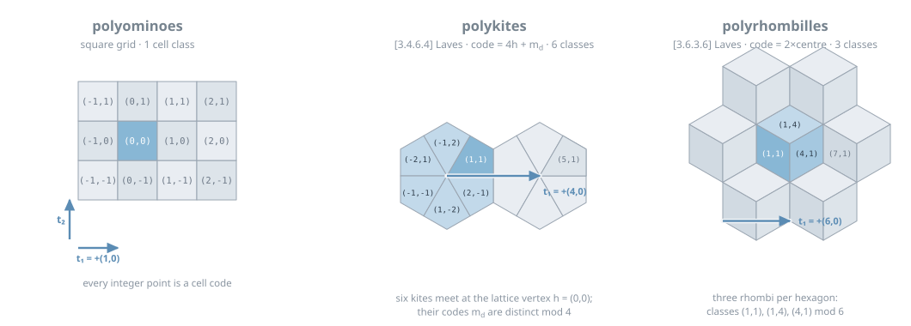
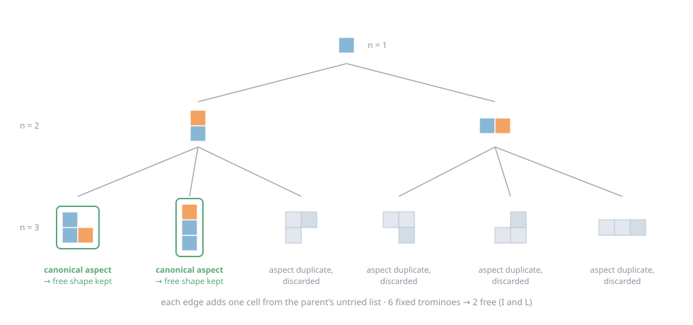
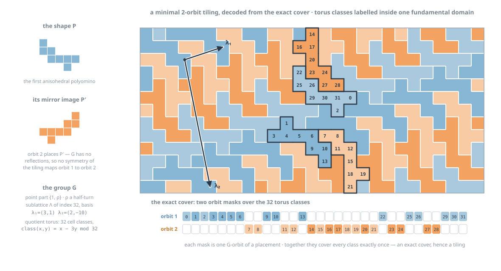

The results page reports what this project found: complete tiling
classifications for polyforms on all eleven Laves grids, validated against
Joseph Myers's tables
where tables exist and extended to seven families where they don't. This page explains
how — the algorithms, the data structures, and the proofs, written for a reader who
knows what a symmetry group is but has never seen tiling-classification software. Everything
described here is implemented in a few thousand lines of Python (plus a SAT solver and a
proof checker); nothing uses floating point, and every geometric fact the engine relies on is
machine-checked at startup.
Part 1 · the questionWhat “tiles the plane” means, and how simply
A polyform is a finite set of cells of a fixed periodic grid — squares, hexagons,
kites, Cairo pentagons — glued edge to edge. It tiles the plane if congruent copies
(rotations and reflections allowed, all aligned to the same grid) can cover the plane with no
gaps and no overlaps. That single yes/no question hides a hierarchy of how simply a shape
tiles, and the hierarchy is what gets classified. The measuring stick is the
isohedral number: in a tiling, the symmetry group of the whole tiling acts on the tiles,
carving them into orbits; a tiling is k-isohedral if it has k orbits, and a shape's
isohedral number is the smallest k over all its tilings. If every copy is
“the same tile seen from the same angle” — one orbit — the tiling is
isohedral (k = 1). A shape whose best tiling needs k ≥ 2
orbits is k-anisohedral: it tiles, but only inhomogeneously, with copies playing
genuinely different roles. Below isohedral sit two even simpler classes worth splitting out,
because they admit fast special-purpose tests: tiling by translations alone, and tiling by
translations plus a single 180° rotation (the engine's version of the Conway-criterion
class). At the other extreme a shape may be a proven non-tiler — or it may sit in the
gap that makes the subject interesting.
The classifier pipeline, in the exact order the code runs it
(classify.py). Cheap boundary-free tests go first; the expensive machinery only sees
survivors. The dashed pill is not a failure mode but a finding: a shape whose coronas never stop
but which tiles at no searched k is exactly what an aperiodic monotile looks like to a computer
— Myers notes his programs would “run for ever” on one; this engine reports the
evidence and stops.
The section numbers in the diagram are the plan of this page: shapes must first be enumerated
(§3) on a grid the engine can reason about exactly (§2); tilings are found by an
algebraic reduction to finite exact-cover problems (§4); non-tilings are proved by a
combinatorial search over coronas (§5); both searches were later handed to a SAT solver with
proof logging (§6); decorations extend the whole pipeline to Wang-style matching rules
(§7); and §8 is honest about performance against Myers's twenty-year-old C programs.
Part 2 · the substrateOne engine, fifteen grids
Classical polyomino code hard-wires the square lattice into every loop. This project instead
treats the grid — the base tiling — as data. A backend describes one
periodic tiling of the plane in purely combinatorial, integer terms:
Cells are integer points. Every cell is encoded injectively as a point of
Z² (its code). A translation lattice L (spanned by two code vectors
t₁, t₂) acts by addition, and finitely many residues represent the cell classes
modulo L — one for the square grid, six kite classes, three rhombille classes.
Symmetries are affine integer maps. Every symmetry of the base tiling acts on codes as
p ↦ Mp + v, with M drawn from a finite point group and v ≡ a fixed offset
aspect_base[M] modulo L. The offsets matter: in non-symmorphic tilings
(Cairo's p4g, the rhombille's p6m about a hexagon centre) a rotation or reflection only exists
composed with a fractional translation, and the offset table is where that lives.
Each cell has an exact polygon with integer vertices in a second coordinate system.
Edge and vertex adjacency are derived from the polygons by scanning which nearby cells
share an edge or corner — never hand-entered.
The axioms are machine-checked. validate() verifies that residues decompose
correctly, that the cell polygons exactly partition a fundamental domain (by shoelace area,
in integers), that adjacency is symmetric, and that every claimed symmetry maps cells to cells
preserving both adjacency relations, with closure under composition and inverse. A new grid is
“supported” the moment its codes, matrices and polygons pass this audit.

Three of the eleven backends, drawn from their own
cell_verts tables. Polyominoes: the code is the cell. Polykites
([3.4.6.4]): six kites meet at each lattice vertex h, and kite d at h gets code
4h + md in axial coordinates — the six md are distinct
mod 4, so decoding is a table lookup. Polyrhombilles ([3.6.3.6]): a rhombus is coded by twice its
centre, giving residues (1,1), (1,4), (4,1) mod 6. One lattice step t₁ is drawn in each
panel; note it is +(1,0) on codes for the square grid but +(4,0) and +(6,0) on the finer-grained
code lattices.
All eleven Laves tilings run through
this one interface: square, triangular, hexagonal, kite [3.4.6.4], Cairo [3.3.4.3.4],
rhombille [3.6.3.6], floret [3.3.3.3.6], prismatic [3.3.3.4.4], tetrakis [4.8.8] (whose
tan-pair regions are the classical polyaboloes), kisrhombille [4.6.12] and triakis [3.12.12].
Every algorithm in the rest of this page — enumeration, group enumeration, exact cover,
corona search, SAT encodings — is written once, against the interface. There is also one
view: direct_view(B) copies a backend and deletes the determinant−1
matrices from its point group, which is the entire implementation of “Spectre mode”
(one-sided shapes, reflection-free tilings).
Genericity earned its keep immediately: the engine's first real bug was kite-specific. On the
square grid every integer translation of a candidate neighbour placement is a symmetry of the
grid, so a placement test that forgets to ask “is this isometry actually a symmetry of the
base tiling?” cannot fail there — on the kite grid it silently admits impossible
neighbours. The fix (an explicit is_symmetry check on every placement) is invisible
on ominoes and load-bearing everywhere else.
Part 3 · enumerationCounting shapes without repeating yourself
Before classifying shapes one must list them — every free polyform of size n,
exactly once. The engine uses Redelmeier's algorithm, the standard for polyomino counting
since 1981, generalised to any backend. Grow shapes cell by cell from a root, keeping a list of
untried frontier cells; at each step, take the next untried cell, add it, recurse with the
frontier extended by its new neighbours, then remove it and permanently ban it within this
subtree. The ban is the whole trick: every fixed shape (shape up to translation) is generated by
exactly one path through the tree, so nothing is generated twice and no isomorphism test is ever
run during enumeration. Two backend-aware details replace the classic square-grid shortcuts: the
root ranges over the residue classes (a kite shape can start on any of the six kite types), and
“cells before the root” are banned in code order to prevent translated duplicates.

The full enumeration tree for n ≤ 3 on the square grid
(engine-verified: these are exactly its six fixed trominoes). Each edge adds one cell (gold) from
the parent's untried list; the two subtrees share the root prefix and never produce the same
fixed shape. Free shapes are then picked out by canonical aspect: a leaf is kept iff its
translation-normalised form is the lexicographically smallest among all its rotations and
reflections (green rings) — the L survives once out of four aspects, the I once out of
two.
The canonical-aspect step deserves a remark, because Myers makes the same design choice for the
same reason and says so: checking canonicity per shape is not the fastest way to count
free polyforms (Redelmeier's own symmetry bookkeeping is), but when every surviving shape is
about to pay for a full tiling classification, discarding non-canonical aspects early is far
cheaper than classifying each shape eight or twelve times and untangling the overcount
afterwards. Two more pieces round out this stage. Holes: flood-fill the complement of the
shape inside a margin-padded bounding box from the rim; any unreached complement cell certifies a
bounded hole, and holey shapes are classified instantly (a shape with a hole cannot tile —
on these grids no single polyform fits inside its own hole boundary the right number of times,
and Myers's hierarchy simply lists them separately). Parallelism: the tree is split at
depth two into independent (root, second-cell) branches, each replayable in isolation —
which is also a preview of §8, because the tree's shared prefixes are exactly the structure
a faster engine would exploit for classification itself, not just for counting.
Part 4 · finding tilingsPeriodic tilings are finite exact covers
Here is the engine's central idea. A periodic, grid-aligned tiling by a shape P has a wallpaper
symmetry group G that is a subgroup of the base tiling's symmetry group W. Fix G and ask: what
does a tiling with symmetry exactly containing G look like, seen through G's own eyes? The
translations in G form a finite-index sublattice Λ of the grid's lattice L, so the plane's
cells collapse to a finite quotient torus — cells modulo Λ, of which there are
(index of Λ) × (number of residues). A placement of P anywhere in the plane projects
to a set of torus cells; the images of that placement under G's finitely many coset
representatives form its orbit, and the orbit's projection is the orbit mask. The
key identity, in both directions:
A k-isohedral tiling with symmetry group G exists if and only if some k orbit masks
exactly partition the torus. Given such an exact cover, expanding the k placements through G
and Λ tiles the plane with k orbits of tiles; conversely any k-isohedral tiling, read
modulo its own symmetry group, is such a cover. Minimising k over all candidate groups G
therefore computes the isohedral number. Infinite geometry has become finite combinatorics.
For this to be an algorithm, the candidate groups must be enumerable. A subgroup
G ≤ W with translation sublattice Λ of index m is determined by three finite
pieces of data: a subgroup Q of the point group (which linear parts occur), a Q-invariant
sublattice Λ (a Hermite-normal-form basis), and an offset cocycle
u: Q → L/Λ assigning each linear part its translational component,
subject to the coherence condition
uM₁M₂ = NM₁uM₂ + uM₁ + c(M₁,M₂)
mod Λ (the constant c absorbs the base tiling's own fractional offsets). Two groups
differing by a coboundary — conjugation by a translation — give the same tilings, so
cocycles are canonicalised modulo coboundaries, and whole groups modulo conjugacy in W. The
enumeration depends only on (backend, m) and is cached; each group precomputes its coset
representatives' permutation action on the torus. This is textbook group cohomology doing
concrete work: the cocycle condition is why glide reflections and offset rotations come out
right on p4g and p6m grids without any special-casing.
The search itself (isohedral.py) is a lazy exact-cover backtracker: branch on the
first uncovered torus cell, generate only the placements covering that cell, take each
compatible orbit mask, recurse. Placements whose G-images partially overlap themselves are
rejected outright (their orbit is geometrically impossible), and two admissibility filters prune
groups before any search runs: an orbit with stabiliser of order s contributes exactly
n·|Q|/s cells, so |Q|, m, n and the shape's own symmetry order must satisfy a counting
identity (“stabiliser profiles”); and an asymmetric shape can never live in a group
where a non-identity element fixes a torus cell, since that element would have to be a symmetry
of the tile covering it. The two fast pre-tests in the pipeline are degenerate cases of the same
picture, cheap enough to skip group enumeration entirely: P tiles by translations iff its
cells are a transversal of the torus for some index-(n/c) sublattice, and by 180° iff
P plus a rotated copy is a transversal on the index-(2n/c) quotient with the half-turn adjoined.

The whole of §4 in one genuine example, computed by the engine and
drawn from its output: the 2-anisohedral octomino (the smallest polyomino that tiles only
inhomogeneously — Myers's first anisohedral entry). Its minimal group G has point part
{1, ρ} and a sublattice Λ of index 32, so the torus has 32 cell classes, and
class(x,y) = x − 3y mod 32 — the numbers written inside one
fundamental domain of the tiling. Each orbit (blue = copies of P, orange = copies of the mirror
P′, dark/light = the two half-turn-related placements within an orbit) covers 16 of the 32
classes; the two orbit-mask rows below cover every class exactly once, and expanding those four
placements through G and Λ is the tiling shown. No single orbit mask covers the torus for
any candidate group — that exhaustive failure at k = 1 is the proof the
shape is anisohedral, not just the absence of a find.
One honest subtlety, discovered by this project's own cross-checking (§7): a placement that
wraps far enough around a small torus can have an orbit mask that a group element stabilises
setwise without stabilising the placement itself. Such a “bogus orbit” passes
the mask-disjointness test yet expands to a configuration that covers the plane twice. It can
only ever create false positives (phantom tilings), never false exclusions; a systematic
audit re-derived all 37 stored anisohedral examples with bogus orbits forbidden and every
published minimum k survived exactly.
How Myers does it, for contrast. His programs search tilings tile-by-tile: start a tile in
class 1, try neighbours in known or new classes, let the tiling's symmetries force copies, and
backtrack on contradiction — a search whose states are partial tilings-with-markings, with
the boundary criteria (Conway's criterion and the translation criterion) as the fast pre-tests.
The exact-cover-over-enumerated-groups formulation here shares no code path, no search order and
no intermediate representation with that. When the two approaches print identical tables for
tens of thousands of shapes — and they do, through n = 10 on ominoes and four
validated families — the agreement is evidence about the mathematics, not about one
program.
Part 4b · the other engineMyers's class search, which discovers its group
Everything above enumerates candidate symmetry groups first and then asks whether the
shape's images partition a torus. Myers's own method inverts that. It never writes a group down:
it grows a patch outward and lets the group fall out of the choices it makes. A faithful
reimplementation lives in myers_isohedral.py, verdict-for-verdict identical to ours
on all 1,762 free polyominoes at n = 7, 8, 9, which is what makes the two
a genuine cross-check rather than one program run twice.
The state is a set of placed tiles, each labelled with a class, plus whatever isometries
have been forced so far. One step of the search:
1. Take the lowest-numbered tile not yet surrounded — some edge of it still faces
empty space.
2. Branch over every way a tile can be placed against that gap: every aspect, every contact
position.
3. Branch again on what that tile is. Either it joins an existing class, which forces
an isometry carrying that class's representative onto it — and that isometry joins the group
— or it opens a new class, allowed while the class count is below k.
4. Whenever a new group element appears, propagate: apply it to every tile already
placed. That forces more tiles, which may force more still. Any conflict with an existing tile
kills the branch.
5. Stop when every class representative is completely surrounded. The group is then closed
and the patch extends to a k-isohedral tiling of the plane.
The shape of its cost follows directly, and it is the opposite of ours. A shape that cannot
tile usually dies within a few dozen nodes: the first tile cannot be surrounded and there is
nothing to propagate. A shape that tiles awkwardly can make propagation explode, because one
unlucky identification forces a cascade that only contradicts itself much later. Our engine pays
the same fixed toll for every shape — every candidate group at every admissible torus index,
restarted for each k — whether the shape is hopeless or trivial.
Which is faster depends on what you measure and on the grid, which is easy to get wrong by
quoting one benchmark. On polyominoes our median is 4–7× faster (the whole answer is one
tiny torus cover, while the class search has to build a patch) while his tail is faster by up to
14,600×, and the tail owns the total: 5.1× his way at n = 9, 15.9× at
n = 10. On polyhexes the median reverses — at n = 12 ours
keeps the aggregate 1.56× but loses the median, 61.8 ms against 24.8. That flip was the
reason to consider porting his search to C, and it did not survive n = 13, where the
median advantage falls back to 1.40× and no hybrid cap beats the engine alone. The two
disagree about which shapes are hard, and the disagreement itself depends on the substrate.
Part 5 · proving non-tilingCoronas, exhaustion, and Heesch numbers
Failure to find a tiling proves nothing — most shapes that don't tile need a different kind
of argument, and it is Myers's argument, implemented in nontiler.py in four
escalating stages. First, the possible-neighbour list: every placement of P that touches a
fixed central copy without overlapping it and without enclosing a pocket that provably
cannot be filled (a bounded region whose area isn't a positive multiple of n cannot be tiled by
copies of P, so any pair of tiles enclosing one is impossible in any tiling). Second,
arc-consistency pruning: neighbour Y dies if some cell adjacent to P could no longer be
covered by any surviving neighbour disjoint from Y — if placing Y strangles the ring, Y
appears in no tiling. Iterate to a fixed point; if some ring cell ends up uncoverable outright,
P is a non-tiler with no search at all, which is how most non-tilers actually fall. Third,
corona elimination: enumerate the complete surrounds (coronas) of the centre; a
neighbour that appears in none of them can never occur next to any copy of P, so delete it
everywhere and repeat — no coronas at all is again an immediate proof.
Surround depth is measured on the touch graph of tiles, not in cells:
a depth-d surround is a finite patch in which the centre and every tile within corona distance
d−1 has its entire neighbourhood ring covered. The engine's searcher memoises pair
compatibility by relative isometry and recomputes exact distances by BFS, so a returned patch
really has the property — and a fully exhausted search really rules it out.
Fourth, for the survivors, the depth-d surround search: try to build the patch of the
figure using only surviving neighbour relations, checked for every touching pair. If no depth-d
surround exists for some d, P is a non-tiler — a tiling would contain one around every tile.
The search is exponential in the corona depth (branching factor: dozens of placements per
frontier cell), which is precisely the tail that §6's SAT engine now owns.
The same machinery, run with different settings, computes Heesch numbers — the
maximum number of times a non-tiler can be fully wrapped in coronas — but with a crucial
soundness switch. All the reductions above assume the configuration extends to a tiling of the
plane; a finite surround has no such obligation, and a neighbour pruned as
“impossible in any tiling” may be exactly what completes a third corona.
Myers flags this himself: the neighbour-list optimisations are
“fundamentally incompatible with computing Heesch numbers.” So certified Heesch
lower bounds (“a depth-3 surround exists”) are computed on the raw,
unpruned candidate universe, where any found patch is genuine; and an exact Heesch number
additionally needs exhaustion — “no depth-4 surround” — over that same raw
universe. Exhaustion over the pruned lists proves non-tiling; only exhaustion over the raw lists
pins the Heesch number.
 Everything in this section, on one shape: the star 10-rhombille's
maximal surround — centre (dark), three complete coronas (blues), outer filler tiles
(gold) that support the third corona without being surrounded themselves. Arc-consistency and
corona elimination could not kill the star; the recursive depth-3 search burned 95 million nodes
without an answer; the SAT engine of §6 found this 88-tile patch in 0.2 s and then
proved no fourth corona exists — so the star's aligned Heesch number is exactly 3, and it
is a non-tiler.
Everything in this section, on one shape: the star 10-rhombille's
maximal surround — centre (dark), three complete coronas (blues), outer filler tiles
(gold) that support the third corona without being surrounded themselves. Arc-consistency and
corona elimination could not kill the star; the recursive depth-3 search burned 95 million nodes
without an answer; the SAT engine of §6 found this 88-tile patch in 0.2 s and then
proved no fourth corona exists — so the star's aligned Heesch number is exactly 3, and it
is a non-tiler.
Part 6 · the SAT pivotTeaching an industrial solver the two hard searches
By late July the project's two remaining walls were the same wall twice: a deep backtracking
search re-deriving the same local contradictions in exponentially many contexts. That is the
problem class modern CDCL SAT solvers were built for — conflict-driven clause
learning turns every dead end into a learned clause, a reusable lemma pruning the entire rest of
the tree, where the hand-rolled DFS re-discovers it branch by branch. Both searches were
re-encoded as propositional formulas; the recursive engines remain as validators and for cheap
positive cases.
Surround existence as SAT (scripts/sat_surround.py). One Boolean variable
xi per candidate placement, over a universe provably closed under everything the DFS
could reach (the BFS closure of the centre under the alive-both-ways neighbour relation, to
depth d). Clauses: the centre is asserted; each grid cell carries an at-most-one
constraint over the placements covering it (pairwise for ≤ 6 coverers, Sinz sequential
encoding beyond); each touching pair whose relative isometry fails the neighbour test gets
a binary conflict clause; and level variables, only ever forced upward, propagate corona
distance so that every tile within distance d−1 must have its ring covered. SAT decodes to
a patch that is independently re-verified; UNSAT is the same claim the DFS's
“exhausted” verdict makes, over the same universe.
k-orbit exclusion as SAT (scripts/sat_isohedral.py). Per candidate group
G: one variable per distinct orbit mask, an exactly-one constraint per torus cell
(at-least-one plus at-most-one — strictly stronger propagation than the DFS's pairwise
disjointness), and a totalizer cardinality bound: at most KG orbits selected.
One UNSAT query then excludes every admissible k ≤ KG for that
group at once; on SAT the bound is tightened clause by clause until the group's exact minimum
appears. Positives are decoded to concrete placements and re-verified at plane level (with bogus
orbits detected and, if needed, forbidden and re-solved); the minimum over groups is the
isohedral number.
DRAT certificates. A refutation is only as trustworthy as the code that produced it
— unless the solver logs a DRAT proof, a checkable derivation of the empty clause
that the independent checker drat-trim (a ~3,000-line C program, no shared code)
verifies clause by clause. Every load-bearing UNSAT in the project — the star's depth-4
refutation in both candidate universes, all five heptahex exhaustions, the star's full
k ≤ 15 exclusion (180 per-group refutations) — carries a verified DRAT log,
with negative controls (delete a core lemma, watch verification fail). The verdicts now rest on
the encodings, which are small, documented, and cross-validated against the recursive
engines in both directions — not on trusting any search. One field note for posterity:
pysat's cadical binding accepts with_proof=True and silently emits empty proofs;
the pipeline hard-fails on empty logs and certifies with glucose42.
What the pivot bought, on the project's hardest instances (same machine, same candidate universes)
| question | recursive engine | SAT engine | certificate |
|---|
| star: depth-3 surround | 95M nodes on 7 cores, hours, inconclusive | found in 0.2 s (88-tile patch) | patch re-verified by the DFS engine |
| star: depth-4 surround | out of reach | UNSAT in 7 s → Heesch = 3, non-tiler | DRAT, both universes + second solver |
| star: k-isohedral exclusion | k ≤ 15 in 4.3 CPU-h | k ≤ 18 in 7 min | DRAT for all 180 group refutations, k ≤ 15 |
| hat: k-isohedral exclusion | k ≤ 7 | k ≤ 14 in 30 s | positive controls (finds known min-k cases) |
| turtle: k-isohedral exclusion | k ≤ 8 | k ≤ 14 in 45 s | same, plus Heesch ≥ 7 via SAT surrounds |
| 5 heptahexes + 9 octahexes, unresolved | node budgets hit, parked | exhausted at depths 2–4, seconds each | DRAT; matches Myers's non-tiler counts |
On the nine cross-validation cases where both engines finished, verdicts agree in
both directions with roughly 500× speedups on exhaustive answers. The division of labour
that emerged: SAT owns exclusions and deep exhaustions, the recursive engine keeps cheap
positives, seeded warm starts, and its role as an independent check on every SAT-found
patch.
Part 7 · decorationsBumps, dents, a parity lemma — and three audits
The Spectre monotile works by edge decoration: chiral notches that force which neighbours
may meet. The engine models this with Wang-style labels on boundary edges: label 0 matches
itself, labels 1 and 2 are bump/dent partners matching only each other, and a
mirror map applied under reflections makes a notch chiral (a reflected bump no longer
mates). A decorated shape's placement compatibility depends only on the relative isometry of two
copies, so the entire §4–5 machinery lifts: the neighbour filter drops label-clashing
placements before pruning even starts, and the exact-cover validator accepts only covers whose
seams match everywhere. The question the machinery answers: can a matching rule raise a
shape's isohedral number?
Most decorations never reach a search, because of a parity lemma. Suppose the mirror map
is the identity and a decoration carries b bumps and d dents of one pair, b ≠ d.
In any tiling every bump lies on an edge shared with a neighbour, where it must meet a dent,
and vice versa — so bumps and dents pair up bijectively across shared edges. A disc
containing N tiles then holds Nb bumps and Nd dents, matched to each other except along the
disc's O(√N) boundary. As N grows this forces b = d — so an unbalanced
decoration tiles at no k whatsoever, and on an eight-edge shape this one count dismisses
5,454 of 6,561 three-label decorations before any search runs.
The honest story of this subsystem, though, is that it took three audits to earn its
numbers, and the audit trail is the most instructive thing on this page. The v1 sweeps
published a “4-anisohedral” decorated L-tromino; a reader looking at the figure
noticed bump discs overlapping — bump-meets-bump contacts no valid tiling could
contain. The validator's window over lattice translates was fixed-size in Hermite coordinates,
and skewed sublattice bases let genuinely touching tiles escape it: phantom tilings,
a too-permissive bug. v2 fixed the window and re-swept; a reader then noticed the new
“4-orbit” figure looked transitive — and brute force agreed: orbit count
1. Placements had been identified by cell footprint, which conflates mirror aspects of a
symmetric shape whose labels differ; the decoder could pick the label-wrong aspect and
reject genuine covers, silently inflating every k: a too-strict bug, invisible to
every test that only checks accepted answers. The v3 engine keys placements by label class,
decodes orbits from per-orbit seed isometries through the group action — and every positive
is re-verified by a brute-force orbit-count oracle that recomputes the found tiling's full
decorated symmetry group from scratch: 160 of 160 k = 2 verdicts exact.
 The surviving truth, drawn: a minimal 2-orbit tiling of an L-tromino
carrying a single bump/dent pair on two of its eight edges — one of exactly eighty such
decorations. Each disc marks a matched edge, coloured by the bump-carrier's orbit. The
undecorated L-tromino tiles by translation; the decoration provably doubles its isohedral number,
and the oracle confirms no compatible tiling does better. Note what this figure genre earned: a
figure exposed the v1 bug, a figure exposed the v2 bug.
The surviving truth, drawn: a minimal 2-orbit tiling of an L-tromino
carrying a single bump/dent pair on two of its eight edges — one of exactly eighty such
decorations. Each disc marks a matched edge, coloured by the bump-carrier's orbit. The
undecorated L-tromino tiles by translation; the decoration provably doubles its isohedral number,
and the oracle confirms no compatible tiling does better. Note what this figure genre earned: a
figure exposed the v1 bug, a figure exposed the v2 bug.
The v3 verdict is duller and firmer than either buggy version's: all eleven Laves unit
prototiles are decoration-rigid (every 3-label bump/dent decoration leaves them isohedral
or kills tiling outright — including the hexagon, whose prized v2
“k = 3” was a phantom), the domino is rigid too, and the L-tromino,
I-tromino and O-tetromino each own a genuine population of 2-anisohedral decorations (80, 48, 32
of 6,561). No edge-matching decoration of any shape tested exceeds k = 2. Two further
audit episodes bracket these: an instrumentation audit (search-cap hits had been misreadable as
found surrounds) and the §4 bogus-orbit audit, both ending in clean re-derivations. The
lesson this project would pass on: every one of the four bugs was caught by an independent
artifact — a figure, an oracle, a second engine — contradicting the search code,
never by the search code testing itself. Compute everything twice, and draw it.
Part 8 · performanceThe bottleneck moved three times
Optimising this engine has been an exercise in being wrong about where the time goes, three
times in a row, each time in a way that only measurement caught. The sequence is worth recording
because the wrong answers were all plausible.
First the neighbour context, which was right. Building the possible-neighbour context
— every candidate placement, each paying a bounding-box flood fill for the pocket check —
really was about 90% of classification. Restricting the flood to the perimeter band a placement
actually disturbs, then compiling the whole context build, took it from dominant to a rounding
error: a 12× algorithmic win and an 8–16× kernel on top.
Then the k = 1 search, which was a red herring. With the context cheap, stage
profiling put 70–79% of the remaining time in the isohedral exact cover — and almost all
of that in searches that fail. Exhaustive failure is the expensive case: the cover must try
every candidate group at every admissible torus index before concluding nothing, and that toll does
not shrink for hopeless shapes. At frontier sizes about 80% of shapes are non-tilers, so the engine
was paying its worst case on four shapes in five.
The fix was not to make the search faster but to stop running it. A proof of non-tiling subsumes
“no isohedral tiling”, so the corona/surround proof can go first; both orders return
identical verdicts, checked over all 1,285 nonominoes. That is worth 1.55× at hex
n = 11 and loses 0.63× at square n = 9, where most shapes still tile
and the proof is dead work — so the order is chosen per row from the previous row's class mix,
against the break-even p/q > tn/ti.
Then the non-tiling proof, which was the real wall. Reordering exposes an uncomfortable
fact: once the k-search sits second, it contributes about a millisecond in twelve. Making it
infinitely fast would buy nothing. prove_nontiler is ~99% of what is left, and profiling
splits it 57% corona enumeration / 42% surround search — both plain interpreted Python, burning
44 million function calls on 91 shapes.
Coronas compiled cleanly, because its inner loop is bigint AND on 260-bit masks,
which becomes a handful of word ANDs once the masks are seven-word bitsets: 13×,
with the kernel mirroring the reference branch-for-branch so the emitted corona lists match in
contents and order. The surround search did not: it needed the geometry memoised
(try_place re-derived the same tile image on every retry) and the touching set derived
from the tile's ring image — ~24 dict probes instead of ~132 — because the overlap scan
above it has already established that no new cell is owned.
Compounding on the same 91 hex n = 11 shapes, single core, idle
| state | prove_nontiler | pipeline | cumulative |
|---|
| as measured at the start | 58.8 ms | 8.3 s | 1.0× |
| + stage reorder | 58.8 ms | 5.4 s | 1.55× |
| + compiled corona kernel | 24.7 ms | 2.2 s | 3.8× |
| + geometry memos | 15.7 ms | 1.4 s | 5.9× |
| + ring-based touching set | 13.9 ms | 1.3 s | 6.4× |
| + bulk marshalling, inlined compose | 11.6 ms | 1.1 s | 7.5× |
And then it was not compute at all. Pushed to multi-million-shape rows, the driver stopped
being slow and started being out of memory: kisrhombille n = 19 and tetrakis
n = 19 both filled 30 GB and fell to 20% CPU. Three separate causes, none of them the
algorithm. The driver held every shape, then a second list of (index, shape) pairs to feed the pool,
then a dict of every result to re-join afterwards. Worse, fixed_polyforms_branch
materialised every fixed polyform before the caller filtered to canonical representatives
— roughly the symmetry order more shapes than anyone wanted. Yielding instead took tetrakis
n = 19 from 27 GB to 7 GB.
With memory fixed, the same row revealed a fourth thing: a load average of 1.2 on a fourteen-core
machine, because enumerating a branch is one worker's job and the other thirteen wait through it.
Prefetching three branches ahead overlaps enumeration with classification — 3.3M shapes in
2028 s without it, 3.2M in 580 s with it. Prefetching had been unsafe until the enumeration
went lazy; the two fixes only work together.
What did not work, measured and rejected. Myers's class-based search beats exact cover on
the median shape at hex n = 12 (2.4×) while losing the aggregate, which looked
like a routing opportunity. Compiling it unchanged with Cython bought 1.09× — the
informative number, since it says the interpreter is not the bottleneck, the Python data structures
are. And the trend that justified a full port did not extrapolate: at n = 13 the median
advantage falls to 1.4× and no hybrid cap beats the engine alone. A real port would mean moving
the entire search state into C for a payoff that is not there. Exact cover stays primary; the class
search stays valuable as an independent implementation for cross-checking verdicts.
The general lesson, if there is one: every bottleneck here was found by profiling and
none by intuition, and three of the four were not where the previous paragraph of this page said they
were. Two of the measurements were also simply wrong the first time — taken while a sweep was
saturating the machine, which inflated one engine's time 80× and inverted a conclusion. A ratio
between two stages of one process survives a loaded box; a ratio between two different algorithms
does not.